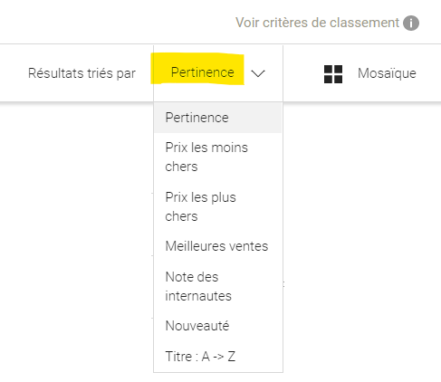

Bienvenue !
Pierre-Julien VILLOUD

Introduction
- Mise en place d'un moteur de recherche plus ou moins sophistiqué
- Surveillance technique et fonctionnelle d'applications en temps réel
- Détecter efficacement et solutionner rapidement des anomalies
La suite Elastic
Historique
-
2000
Shay Banon crée un moteur de recherche pour l'aider à s'y retrouver dans sa longue liste de recettes de cuisine. Compass, puis Elasticsearch est développé (à partir d'Apache Lucene). La solution est rapidement adoptée par une communauté grandissante.
-
2012
Fondation d'Elasticsearch Inc. (qui deviendra ensuite simplement Elastic) et association d'Elasticsearch avec l'agrégateur de log Logstash et l'outil de visualisation Kibana pour donner la stack ELK.
-
2015
Harmonisation des développements et des numéros de version. Intégration de Beats. Déploiement du SaaS Elastic Cloud sur AWS
-
2017-2018
Création d'Elastic Cloud Entreprise, la solution SaaS interne d'Elastic. Introduction en bourse de la société Elastic.
Le moteur de recherche
Il faut pouvoir rechercher rapidement dans un ensemble de données conséquent et varié.
Il faut pouvoir rechercher approximativement et proposer des corrections automatiques.

Il faut pouvoir trier selon divers critères des résultats avec une notion de pertinence.
Il faut pouvoir filtrer ou regrouper les résultats.
Il faut pouvoir proposer des suggestions pour améliorer la recherche.
Présentation d'Elasticsearch
Concepts

Document
{
"titre" : "Elasticsearch: The Definitive Guide",
"auteurs": ["Clinton Gormley", "Zachary Tong"],
"formats": [
{
"type": "Kindle",
"prix": 24.69
},
{
"type": "Broché",
"prix": 32.84
}
]
}
Index
Type
Mapping
{
"books": {
"mappings": {
"properties": {
"auteurs": { "type": "text", ... },
"formats": {
"properties": {
"prix": { "type": "float" },
"type": { "type": "text", ... }
}
},
"titre": { "type": "text", ... }
}
}
}
}
Shard
Node 1
-
Shard 1
-
{ "titre": "Elasticsearch: The Definitive Guide", ... } -
{ "titre": "Spring in Action", ... } - ...
-
Shard 2
-
{ "titre": "Programming in Java", ... } -
{ "titre": "Continuous Integration", ... } - ...
Replica
Node 1
-
Shard 1
-
Shard 2
-
Replica 3
-
Replica 4
Node 2
-
Shard 3
-
Shard 4
-
Replica 1
-
Replica 2
Récapitulatif
Cluster
Node 1
-
Index 1 : Shard 1
- { "title": "Elastic...", ... } { "title": "Spring...", ... } ...
-
Index 1 : Replica 2
- { "title": "Java...", ... } { "title": "Continuous...", ... } ...
Node 2
-
Index 1 : Shard 2
- { "title": "Java...", ... } { "title": "Continuous...", ... } ...
-
Index 1 : Replica 1
- { "title": "Elastic...", ... } { "title": "Spring...", ... } ...
Communication
9200, elle permet de configurer le cluster et ses différents noeuds, d'effectuer toutes les opérations de CRUD sur les index ou les documents et d'effectuer tout type de recherche.

Indexer
- Création/Affichage/Suppression d'index
- Indexation/Mise à jour/Suppression d'un document
- Opération sur plusieurs documents
http://localhost:9200. Il est possible d'y indiquer le nom d'utilisateur et le mot de passe le cas échéant).
CR(U)D sur les index
PUT /[index_name].
-
Requête HTTP
PUT /people
Corps de la requête (optionnel)
{ "settings" : { "number_of_shards" : 1, "number_of_replicas" : 1 }, "mappings" : { "properties" : { "dateNaissance" : { "type" : "date", "format": "dd/MM/yyyy" }, "sexe" : { "type": "keyword" }, "departementNaissance" : { "type": "keyword" } } } }
CRUD sur les documents
POST /[index_name]/_doc/ (identifiant généré automatiquement, à éviter !) ou PUT /[index_name]/_doc/[id] ou encore PUT /[index_name]/_create/[id] ou POST /[index_name]/_create/[id].
-
Requête HTTP
PUT /people/_doc/1
{ "nom": "V", "prenom": "Pierre", "sexe": "M", "dateNaissance": "30/04/1987", "departementNaissance": "38", "bio": "I worked for 7 years for the company Worldline in Lyon as a Java and FrontEnd lead developper. I am working as a freelance now and I teach at IPI" }
Pour modifier un document, il suffit de le réindexer, c'est-à-dire exécuter une nouvelle requête PUT /[index_name]/_doc/[id]. Le numéro de version est incrémenté et le contenu du document remplacé. Attention à ne pas utiliser la méthode POST /[index_name]/_doc/ qui crée systématiquement un nouveau document (avec un nouvel id). On peut utiliser POST /[index_name]/_update/[id]
document ici. Pour supprimer un document, il suffit d'exécuter une requête DELETE /[index_name]/_doc/[id]. Pour afficher un document, il suffit d'exécuter une requête
GET /[index_name]/_doc/[id].
Opérations sur plusieurs documents
-
Récupérer plusieurs documents
GET /people/_mget
{ "ids": ["1", "1000", "1001"] } -
Indexer plusieurs documents
POST /_bulk
{ "index" : { "_index" : "people", "_id" : "1000" } } { "nom": "Doe", "prenom": "John", "sexe": "M", "dateNaissance": "01/01/1970", "departementNaissance": "01", "bio": "I don't know anything about myself except the fact that I am a man." } { "index" : { "_index" : "people", "_id" : "1001" } } { "nom": "Doe", "prenom": "Jane", "sexe": "F", "dateNaissance": "02/01/1970", "departementNaissance": "01", "bio": "I don't know anything about myself except the fact that I am a woman." } - Modification ou suppression en fonction d'une requête
Rechercher
POST/GET /[index(s)]/_search. A noter qu'il est possible de ne spécifier aucun index, un seul index, ou une liste d'index séparés par des virgules.
-
Renvoyer tous les documents d'un index
POST /people/_search
{ "query": { "match_all": {} } } -
Idem (même corps de requête) mais parmi tous les index
POST /_search
search ici.
Recherche stricte
-
Rechercher sur tous les champs
POST /people/_search
{ "query": { "query_string": { "query": "john AND Doe" } } } -
Rechercher sur un champ avec John ou Jane
POST /people/_search
{ "query": { "match": { "prenom": "John Jane" } } } -
Rechercher sur plusieurs champs
POST /people/_search
{ "query": { "multi_match": { "fields": ["nom", "prenom"], "query": "John Villoud" } } }
search ici.
Recherche partielle
-
Nom commence par do
POST /people/_search
{ "query": { "prefix": { "nom": "do" } } } -
Nom contient j puis n
POST /people/_search
{ "query": { "wildcard": { "prenom": "j*n" } } } -
Bio contient dans l'ordre that I am
POST /people/_search
{ "query": { "match_phrase": { "bio": "that I am" } } } -
Bio contient know a***
POST /people/_search
{ "query": { "match_phrase_prefix": { "bio": "know a" } } }
wildcard (ne jamais commencer par * ou ?) qui peuvent être peu performances lorsque la taille de l'index est importante.
Recherche floue ou par intervalle
-
Nom ressemblant à jonh
POST /people/_search
ou{ "query": { "match": { "prenom": {"query": "jonh", "fuzziness": "AUTO" } } } }{ "query": { "fuzzy": { "prenom": "jonh" } } } -
Personnes nées entre le 1er janvier et le 1er février 1970
POST /people/_search
{ "query": { "range": { "dateNaissance": { "gte": "01/01/1970", "lte": "01/02/1970" } } } }
Scénario 1 : Auto-complétion
-
Mettre
"%VALUE%"dans votre requête pour remplacer automatiquement par la valeur saisie dans le champ.
Agréger

Agrégation basique
-
Afficher tous les résultats en indiquant les cardinalités pour chaque agrégat par département de naissance avec critère de taille et d'ordre
POST /people/_search{ "query": { "match_all": { } }, "aggregations": { "departements": { "terms": { "field": "departementNaissance", "size": 2, "order" : { "_count" : "desc" } } } } }
terms pour un champ mappé en tant que text. Il faut qu'il soit mappé en tant que keyword. Toutes les informations sur l'agrégation terms ici.
Agrégation range
range permettent de répartir les résultats en tranches par rapport à une valeur d'un champ
-
Afficher tous les résultats en indiquant les cardinalités pour chaque agrégat pour les tranches définies
POST /people/_search{ "query": { "match_all": { } }, "aggregations": { "agg_dateN": { "date_range": { "field": "dateNaissance", "format": "yyyy", "ranges": [ { "from": "2000" }, { "from": "1980", "to": "2000"}, { "from": "1970", "to": "1980"} ] } } } }
range pour des champs numériques classiques. Dans ce cas, remplacer date_range par range et supprimer format.
Agrégation histogram
histogram suivent le même principe que les agrégations range mais on spécifie un taille d'intervalle au lieu de définir manuellement les tranches.
-
Afficher tous les résultats en indiquant les cardinalités pour chaque agrégat par année de naissance
POST /people/_search{ "query": { "match_all": { } }, "aggregations": { "agg_dateN": { "date_histogram": { "field": "dateNaissance", "calendar_interval": "year", "format": "yyyy" } } } }
histogram pour des champs numériques classiques. Dans ce cas, remplacer date_histogram par histogram, supprimer format et remplacer calendar_interval par interval
Agrégation filter
filter permettent de regrouper les documents qui respectent les critères du filtre puis d'éventuellement appliquer d'autres agrégations sur ce sous-ensemble.
-
Afficher tous les hommes en indiquant les cardinalités pour chaque agrégat par département de naissance
POST /people/_search{ "query": { "match_all": { } }, "aggregations": { "agg_fi": { "filter": { "term": { "sexe": "M" } }, "aggs": { "departements": { "terms": { "field": "departementNaissance" } } } } } }
"filters": { "filters": [ ... ] } à la place de filter.
Agrégation min max et avg
-
Afficher tous les résultats en indiquant la date de naissance minimum, maximum et moyenne
POST /people/_search{ "query": { "match_all": { } }, "aggregations": { "date_min": { "min": { "field": "dateNaissance" } }, "date_max": { "max": { "field": "dateNaissance" } }, "date_avg": { "avg": { "field": "dateNaissance" } } } }
statistical qui calcule plusieurs statistiques sur le champ défini (celles présentées ici mais également somme, écart type, variance...).
Collecter les données
employes.xml
<employes>
<employe id="1">
<nom>Doe</nom>
<prenom>John</nom>
<complet>John Doe</complet>
<matr>C12345</matr>
<dipl>DUT</dipl>
<emb>06/05/2010</emb>
<comm>...</comm>
<sal>2450.65</sal>
</employe>
...
</employes>apache.log79.210.252.187 - - [29/Nov/2017:23:50:20 +0100] "GET / HTTP/1.1" 200 19502 "-" "Mozilla/5.0 (Windows NT 10.0; Win64; x64; rv:57.0) Gecko/20100101 Firefox/57.0" 443 "-"
...
{
prenom: "John"
nom: "Doe",
matricule: "C12345",
dateEmbauche: "2010-05-06",
salaire: 2450.65
}{
ip: "79.210.252.187",
date: "2017-11-29 23:50:20",
statusCode: 200,
url: "/",
httpMethod: "GET",
port: 443
}- Gestion de l'insensibilité à la casse
- Prise en compte de la phonétique
- Gestion des synonymes
- Gestion des conjugaisons et des pluriels
- ...
La suite Beats

FileBeat
Configuration
filebeat.yml :
#Fichier filebeat.yml
filebeat.inputs:
- type: log
enabled: true
paths:
- /var/log/*.log
#============================== Elastic Cloud =====================================
cloud.id: XXX
cloud.auth: user:password
#============================== Ou Kibana =========================================
setup.kibana:
host: "localhost:5601"
#============================== Output (un seul) ==================================
output.elasticsearch:
hosts: ["localhost:9200"]
#output.logstash:
#hosts: ["localhost:5044"]Modules
filebeat modules enable apache
# Module: apache (modules.d/apache.yml ou modules.d/apache.yml.disabled si non activé)
- module: apache
# Access logs
access:
enabled: true
var.paths: ["/var/logs/apache/access_log*"]
# Error logs
error:
enabled: true
# Set custom paths for the log files. If left empty,
# Filebeat will choose the paths depending on your OS.
var.paths: ["/var/logs/apache/error.log*"]yml et modules à activer/désactiver.
MetricBeat

HeartBeat
# fichier heartbeat.yml
heartbeat.monitors:
- type: http
# ID used to uniquely identify this monitor in elasticsearch even if the config changes
id: mon-id
# Human readable display name for this service in Uptime UI and elsewhere
name: Application Dummy
# List or urls to query
urls: ["http://dummyapp.com/isAlive", "http://otherservice:4545/"]
# Configure task schedule
schedule: '@every 10s'
# Total test connection and data exchange timeout
#timeout: 16s
Logstash

Configuration de Logstash
# Collecte de logs Apache
input {
file {
path => "/var/log/apache2/access.log"
start_position => "beginning"
}
}
filter {
grok {
match => { "message" => "%{COMBINEDAPACHELOG}" }
}
date {
match => [ "timestamp" , "dd/MMM/yyyy:HH:mm:ss Z" ]
}
}
output {
elasticsearch {
hosts => [ "localhost:9200" ]
}
}# Collecte de logs custom
input {
beats {
port => "5044"
}
}
filter {
dissect {
mapping => { "message" => "%{ts}-%{+ts}-%{+ts} %{level} - %{msg}" }
}
}
output {
elasticsearch {
hosts => [ "localhost:9200" ]
}
stdout { codec => rubydebug }
}Grok filters sont difficiles à configurer. Il vaut mieux les tester en utilisant un debbuger ou l'outil intégré à Kibana. Le Dissect Filter est plus facile à utiliser.
Visualiser les données
- Discover : Exécuter des requêtes directement dans Elasticsearch
- Visualize : Visualiser des requêtes spécifiques sous forme de graphiques
- Dashboard : Regrouper dans un tableau de bord plusieurs visualisations
- Canvas : Idem que Dashboard mais axé sur la présentation
- Maps : Visualisation de données comportant des éléments géospatiaux
- Machine Learning : Modélise le fonctionnement normal de l'application
- Metrics : Visualise les logs et métriques techniques de l'infrastructure
- Logs : Facilite la consultation des logs collectés ou agrégés
- APM : Surveillance des performances applicatives
- Uptime : Surveillance de la disponibilité des services
- Graph : Mises en relation pertinentes des données
- SIEM : Visualisation de métriques axées sur la sécurité
- Dev Tools : Client REST Elasticsearch, debugger...
- Stack Monitoring : Surveillance des services ELK
- Management : Paramétrage de Kibana
Discover
KQL ou Apache Lucene.
Données de test
Canvas
Visualize
Paramétrage
Metrics permet de définir quelles sont les informations qui seront affichées sur la visualisation.
Buckets permet de définir comment on regroupe les données. On peut définir plusieurs séries (Split series) pour un diagramme et/ou avoir un diagramme pour chaque groupement (Split chart)
Dashboard
Metrics
APM
Uptime

Conclusion